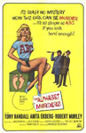

|
||
1965 - The Alphabet Murders |
||
The Alphabet Murders is a British detective film based on the novel The A.B.C. Murders by Agatha Christie, starring Tony Randall as Hercule Poirot and Margaret Rutherford as Miss Marple. Albert Aachen, a clown with a unique diving act, is found dead, the murder weapon happens to be a poison dart. When a woman named Betty Barnard becomes the next victim, detective Hercule Poirot suspects that Sir Carmichael Clarke could be in grave danger. As he and Captain Hastings look into the crimes, a beautiful woman with an interesting monogram named Amanda Beatrice Cross becomes the focus of their investigation, at least until she leaps into the Thames. |
||
        |
||
Screen Versions |
||
The part of Poirot had originally been intended for Zero Mostel but the film was delayed because Agatha Christie objected to the script; amongst the things objected to was the intention to put in a bedroom scene with Hercule Poirot. The film varies significantly from the novel and emphasises comedy, the specialty of director Frank Tashlin. Poirot is given buffoonish characteristics, while still remaining a brilliant detective. |
||
 |
||
1965 |
||
Miss Marple |
- |
Margaret Rutherford |
Hercule Poirot |
- |
Tony Randall |
Amanda |
- |
Anita Ekberg |
Hastings |
- |
Robert Morley |
Japp |
- |
Maurice Denham |
Duncan Doncaster |
- |
Guy Rolfe |
Lady Diane |
- |
Sheila Allen |
Franklin |
- |
James Villiers |
Don Fortune |
- |
Julian Glover |
Betty Barnard |
- |
Grazina Frame |
'X' |
- |
Clive Morton |
Sir Carmichael Clarke |
- |
Cyril Luckham |
Wolf |
- |
Richard Wattis |
Cracknell |
- |
Patrick Newell |
Sergeant |
- |
David Lodge |
Judson |
- |
Austin Trevor |
Dragbot |
- |
Windsor Davies |
Bowling Alley Attendant |
- |
Drewe Henley |
Mrs. Fortune |
- |
Sheila Reid |
Mr. Stringer |
- |
Stringer Davis |
Directors |
- |
Frank Tashlin |
Screenplay |
- |
David Pursall & Jack Seddon |
 |
||